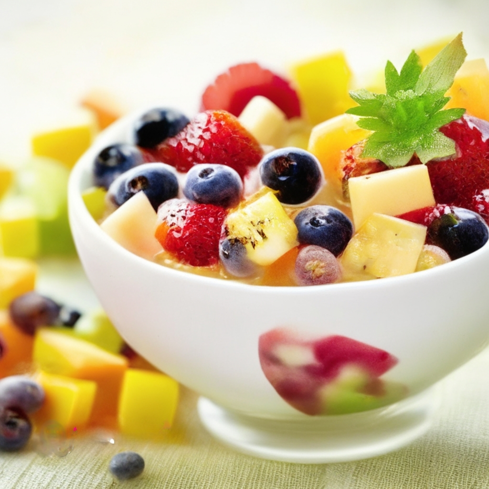

Salada de frutas com iogurte grego

Salada de frutas com iogurte grego
Ingredientes
- 1 xícara de morangos fatiados
- 1 xícara de abacaxi em cubos
- 1 xícara de uvas vermelhas
- 1 xícara de iogurte grego
- 1 colher de sopa de mel
Modo de Preparo
- Misture as frutas em uma tigela.
- Em uma tigela separada, misture o iogurte grego e o mel.
- Sirva as frutas com a mistura de iogurte e mel por cima.
- Bom Apetite!
Informações Nutricionais
| Nutrientes |
Porção (1 xícara de frutas com 1 colher de sopa de iogurte) |
%VD |
| Valor Calórico (Kal) |
140,67 |
| 10
| Carboidratos (G) |
16,18 |
7,02 |
| Proteínas (G) |
5,13 |
2,25 |
| Gorduras totais (G) |
5,57 |
3,78 |
| Fibras Alimentares |
8,98 |
2,68 |